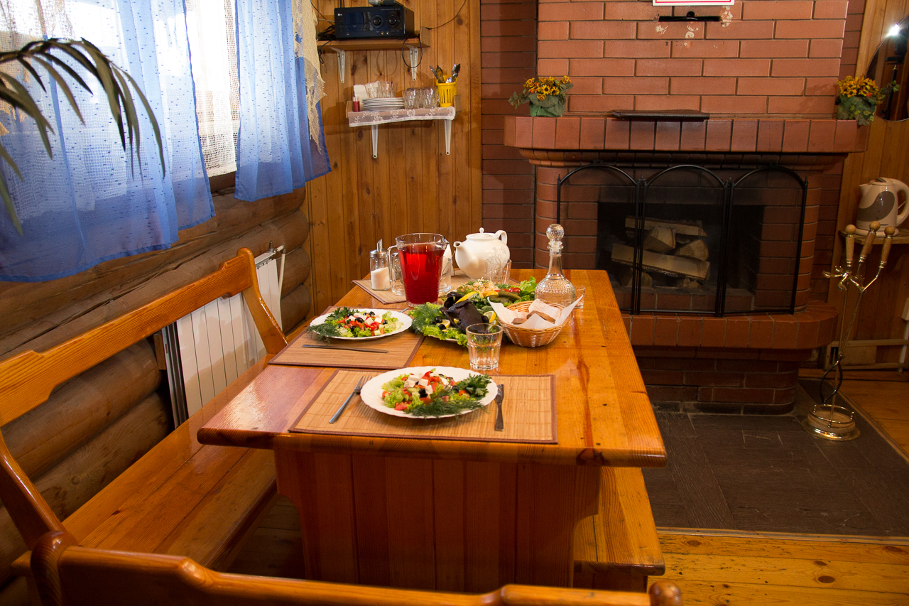
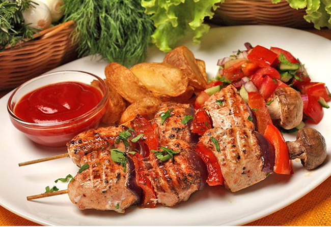
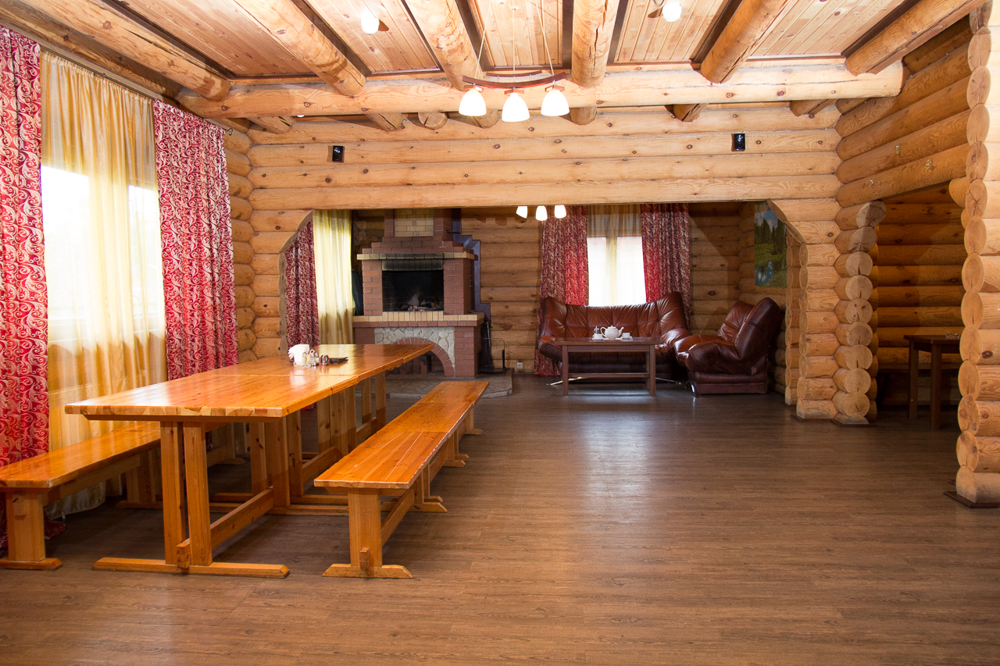

Уютное заведение на территории комплекса с широким выбором блюд. Можно арендовать кафе на день — отличное обслуживание до завершения мероприятия.
Территория комплекса «Лысая горка» — это не только русские бани. Здесь есть уютное заведение, предлагающее гостям широкий выбор блюд русской и кавказской кухни. Вы можете арендовать кафе на день, связавшись с администрацией по телефону +7 (343) 213-75-77.
Вы можете снять кафе в аренду прямо сейчас — просто позвоните по контактному телефону и обсудите интересующие вопросы с администратором. В стоимость аренды включено отличное обслуживание до завершения мероприятия.

